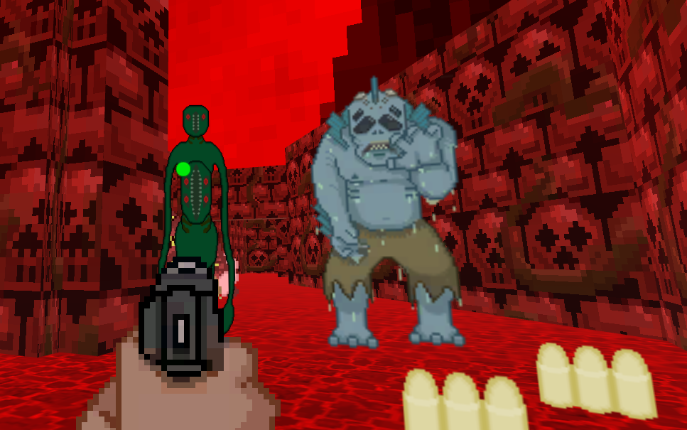

Necronomicon
Game Synopsis:
Bonnie, a single mother of three, lives alone with her children. Her husband, Clyde, left 15 years ago to "get some cigarettes" , but he never returned. In actuality, he left her to enter the Necronomicon, so that he might ascend to eldritch godhood. Left alone to raise their children, rage builds inside her as she begins to uncover the truth. The kids can take care of themselves for a couple of days, right?
More Info
Platform: PC
Development Engine: Unity
Languate: C++
Source Control: Source Tree (a Git interface)
Development Window: January 2019 - May 2019 (Spring Semester of 2019)
Group: The Game Analysis and Development Interest Group (GADIG)
What I programmed and implemented
- A working main menu
- Functioning in-game UI
- Enemy art work from our art team
- Creating the ability to swap between weapons using either the scroll wheel or the number buttons to suit player preferences
Other Notes
I also did quality assurance testing on a pre-alpha build of Necronomicon that can be found
here.
My Thought Processes
Main Menu
While working on Necronomicon, my main focus was ensuring that artwork was properly implemented and integrated into the latest
build of the game as this was apparently an issue in several of GADIG's previous titles. Thus, when working on specifically
the titlescreen of Necronomicon, I communicated frequently with the Art Team to ensure a smooth integration of their work into
the game.
Not every aspect of the menu worked properly.
Despite these art assets being made in Unity, some file formatting prevented me from using a portion of the artwork for the main menu.
Luckily, I had the idea of the main menu in mind already and reformatting the art work did not take long.
I took still images provided by the Art Team and made them interactables to make the start and exti buttons. After that, Inserting and
centering the icon was easy. The only issue I had left was inserting the side bars.
In-Game UI
When making the in-game UI for Necronomicon, this time I communicated heavily with the Design Team. We both quickly identified that
Necronomicon is designed to be a fast paced, first person shooter paying homage to games such as the original Doom.
With that in mind, we agreed that Necronomicon should have as few UI elements as possible while still conveying as much info as possible.
I made the conscious decsision to include a health bar; an aiming reticle; and an ammo counter only. Anything else could easily
clutter up the screen. I also chose to make the Pistol and Ammo font colors green and blue respectively to help the player more easily distinguish
important information. This is especially helpful when the majority of the game itself it red.
Sadly due to time constraints, we had to start early development on our next game as quickly as possible. However, there are some elements
that I would have loved to adjust and add but did not have time for.

The Enemy Spawner I animated in Unity from still images made by GADIG's Art Team
Pulling An All-Nighter
Despite focusing on the UI elements of Necronomicon, I also aided in implementing other systems into the game. During GADIG's Spring 2019 Game
Jam, I was given the task of finishing a pre-alpha build of the Necronomicon. Due to various factors, the Programing Directors were not able
to work on the game. Thus, I ended up taking the reins. However, I given less than half a night to work on and finsih the task at hand.
Starting around 4:00 in the morning, I learned how to create animators in Unity from scratch; implement serveral different 2d models (all of the enemies currently in the game) and present it live on GADIG's
Twitch Channel by 10 a.m. It was an exhilerating few hours, and while I know definitely can do it again, I am not sure I would.
Afterwords, I also wrote a
document displaying Necronomicon's pre-alpha build, giving feedback to each of our teams.

Enemies I animated in Unity from still images made by GADIG's Art Team
What I learned
I learned a lot about working as a programmer and how to interface with different teams or departments in order to create UI elements for
both the Main Menu and for game and the In-Game UI, with a focus on a minimalistic HUD. With the Art Team's designs, I was able to
translate images into interactable buttons in Unity.
I was also able to learn about animators and how they work by transitioning from one still image to the next like a flow chart in Unity.
Admittedly, it was while working in a stressful environment, but I was able to pull through despite that!
I also became more cofortable with using Git. Having to constantly commit and push when possible and pull whenever there was a new build
was essential to the success of Necronomicon.
Closing Thoughts
If I were given more time to work on Necronomicon's UI elements, I would have loved to Talk more with our Art Team in making a better
looking reticle and icons. Changing the gun and ammo UI from simple to an icon with a number next to it would convey the same amount
of information without making the player read it out. I think we could have made the health bar much smaller to better align with
our idea of a minimalistic HUD.
I also would have liked to add a screen or image that displays the player controls. While WASD controls are standard for a mouse and
keyboard set up, it's not always obvious to all players as we found out in our late testing stages.
Overall the project went fairly smoothly in terms of the UI elements and I am incredibly glad to have worked on it as a member of
GADIG.
After Necronomicon, I was able to focus on our next project:
Lullaby Heist.
Get Necronomicon on Itch.io by clicking here